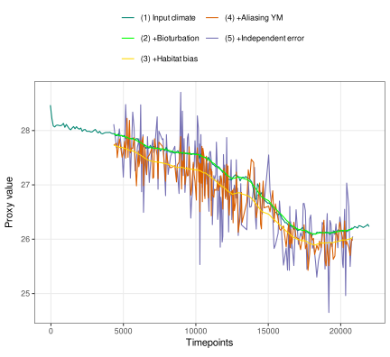
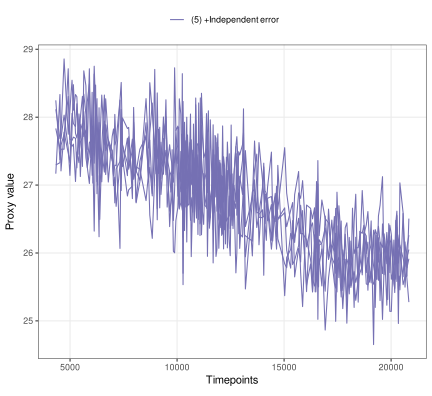

Introduction
sedproxy provides a forward model for sediment archived climate proxies. The forward model and its applications are described in detail in (Dolman and Laepple, CP 2018).
Please contact Dr Andrew Dolman <andrew.dolman@awi.de>, or Dr Thomas Laepple <tlaepple@awi.de>, at the Alfred-Wegener-Institute, Helmholtz Centre for Polar and Marine Research, Germany, for more information.
This work was supported by German Federal Ministry of Education and Research (BMBF) as Research for Sustainability initiative FONA through the PalMod project (FKZ: 01LP1509C).

Installation
sedproxy can be installed directly from github
if (!require("devtools")) {
install.packages("devtools")
}
devtools::install_github("EarthSystemDiagnostics/sedproxy")Shiny app
A Shiny app provides a graphical user interface to the main sedproxy function ClimToProxyClim. Currently this app forward models a proxy from a randomly generated input climate and serves only to illustrate the functionality of sedproxy. The user can alter the parameters of the forward model and observe the results graphically. In future versions it may be possible to load input climates and other input parameters from a file and to save the output.
To run the Shiny app enter the following in the R terminal:

An online version of the Shiny app is hosted at shinyapps.io
Below are some brief examples of how to run sedproxy from a script or the command line.
Example data
sedproxy includes example data for a single sediment core and location: core number 41 in the Shakun et al. (2012) compilation (MD97-2141, Rosenthal et al. 2003). The climate signal is taken from the TraCE-21ka Simulation of Transient Climate Evolution over the last 21,000 years, using the grid cell closest to core MD97-2141. Seasonality of G.ruber, the Foraminifera for which test Mg/Ca ratios were measured, is taken from the model of Fraile et al (2008). Sediment accumulation rates were estimated from the depth and age data associated with core MD97-2141, with a minimum rate of 0.2 * the mean rate.
The MD97-2141 core
N41.proxy.details %>%
mutate_if(is.numeric, round, digits = 2) %>%
gather() %>%
kable(., format = "markdown", digits = 2)| key | value |
|---|---|
| Number | 41 |
| ID.no | N41 |
| Core | MD97-2141 |
| Location | Sulu Sea |
| Proxy | Mg/Ca |
| Lat | 8.78 |
| Lon | 121.28 |
| Elevation | -3633.000000 |
| Reference | Rosenthal et al., 2003 |
| Resolution | 77.89 |
| Calibration.ref | Rosenthal and Lohman, 2002 |
| Calibration | T = ln(MgCa/0.28)/0.095 |
| Foram.sp | G. ruber |
| Ref.14C | de Garidel-Thoron et al., 2001, Paleoceanography |
| Notes | NA |
| Geo.cluster | Sulu Sea |
| Archive.type | Marine sediment |
Input climate signal
The first 5 rows:
| 1 | 2 | 3 | 4 | 5 | 6 | 7 | 8 | 9 | 10 | 11 | 12 |
|---|---|---|---|---|---|---|---|---|---|---|---|
| 24.71 | 24.24 | 24.91 | 26.07 | 26.53 | 27.07 | 27.40 | 26.77 | 26.49 | 26.49 | 26.78 | 26.19 |
| 24.84 | 24.38 | 24.68 | 25.86 | 26.57 | 26.52 | 27.01 | 27.52 | 26.63 | 26.70 | 26.63 | 25.82 |
| 24.69 | 24.60 | 25.21 | 26.00 | 26.46 | 26.94 | 27.00 | 26.99 | 26.39 | 26.45 | 26.66 | 25.77 |
| 24.55 | 24.52 | 25.34 | 26.36 | 26.87 | 26.75 | 27.29 | 26.83 | 26.55 | 26.91 | 26.59 | 25.84 |
| 24.62 | 24.19 | 24.80 | 26.02 | 26.84 | 26.67 | 26.99 | 27.25 | 26.80 | 27.01 | 26.67 | 25.81 |
Actual proxy record
Core MD97-2141 (Rosenthal et al. 2003)
| Published.age | Published.temperature | Sed.acc.rate.cm.ka | Proxy.value |
|---|---|---|---|
| 4334.286 | 28.92 | 36.79 | 4.346 |
| 4527.429 | 29.20 | 36.75 | 4.460 |
| 4575.714 | 29.15 | 36.77 | 4.442 |
| 4720.571 | 28.55 | 36.77 | 4.195 |
| 4913.714 | 28.33 | 36.70 | 4.109 |
| 4994.400 | 29.44 | 36.67 | 4.564 |
Function ClimToProxyClim
ClimToProxyClim is the main function in package sedproxy. It simulates a sediment archived proxy from an assumed true climate signal, the sediment accumulation rate, seasonality of the encoding organism/process, and the number of samples per timepoint.
set.seed(26052017)
clim.in <- N41.t21k.climate[nrow(N41.t21k.climate):1,] - 273.15
# The input climate signal should be a time series object
# The Trace simulation runs to the year 1990 AD, therefore the start time for
# the input climate is -39 years BP
clim.in <- ts(clim.in, start = -39)
PFM <- ClimToProxyClim(clim.signal = clim.in,
timepoints = round(N41.proxy$Published.age),
calibration.type = "identity",
habitat.weights = N41.G.ruber.seasonality,
sed.acc.rate = N41.proxy$Sed.acc.rate.cm.ka,
sigma.meas = 0.23,
sigma.ind = 2,
n.samples = 30,
n.replicates = 10)
PFM$everything## # A tibble: 14,045 x 7
## timepoints n.samples replicate stage value scale label
## <dbl> <dbl> <dbl> <chr> <dbl> <chr> <chr>
## 1 4334 30 1 proxy.bt.sb.sampY 27.7 Proxy units (4) +Alia~
## 2 4527 30 1 proxy.bt.sb.sampY 27.7 Proxy units (4) +Alia~
## 3 4576 30 1 proxy.bt.sb.sampY 27.7 Proxy units (4) +Alia~
## 4 4721 30 1 proxy.bt.sb.sampY 27.6 Proxy units (4) +Alia~
## 5 4914 30 1 proxy.bt.sb.sampY 27.6 Proxy units (4) +Alia~
## 6 4994 30 1 proxy.bt.sb.sampY 27.6 Proxy units (4) +Alia~
## 7 5092 30 1 proxy.bt.sb.sampY 27.7 Proxy units (4) +Alia~
## 8 5156 30 1 proxy.bt.sb.sampY 27.6 Proxy units (4) +Alia~
## 9 5254 30 1 proxy.bt.sb.sampY 27.7 Proxy units (4) +Alia~
## 10 5318 30 1 proxy.bt.sb.sampY 27.7 Proxy units (4) +Alia~
## # ... with 14,035 more rowsSimple plotting
## Joining, by = c("stage", "scale")
## Scale for 'alpha' is already present. Adding another scale for 'alpha', which
## will replace the existing scale.
Plot 5 replicates of the final simulated proxy
PFM %>%
#filter(stage == "simulated.proxy") %>%
PlotPFMs(., max.replicates = 5, plot.stages = "simulated.proxy")## Joining, by = c("stage", "scale")
## Scale for 'alpha' is already present. Adding another scale for 'alpha', which
## will replace the existing scale.
Conversion to proxy units
The initial input climate signal can be converted into “proxy units” if a calibration.type is specified. This simulates the Environment -> Sensor stage of the proxy system.
## Rescaling noise
## Joining, by = c("stage", "scale")
## Scale for 'alpha' is already present. Adding another scale for 'alpha', which
## will replace the existing scale.Literature cited
Dolman, A. M. and Laepple, T.: Sedproxy: a forward model for sediment archived climate proxies, Clim. Past Discuss., https://doi.org/10.5194/cp-2018-13, in review, 2018.
Fraile, I., Schulz, M., Mulitza, S., & Kucera, M. (2008): Predicting the global distribution of planktonic foraminifera using a dynamic ecosystem model. Biogeosciences, 5: 891–911.
Laepple, T., & Huybers, P. (2013): Reconciling discrepancies between Uk37 and Mg/Ca reconstructions of Holocene marine temperature variability. Earth and Planetary Science Letters, 375: 418–429.
Rosenthal, Y., Oppo, D. W., & Linsley, B. K. (2003): The amplitude and phasing of climate change during the last deglaciation in the Sulu Sea, western equatorial Pacific. Geophys. Res. Lett., 30: 1428.
Shakun, J. D., Clark, P. U., He, F., Marcott, S. A., Mix, A. C., Liu, Z., Otto-Bliesner, B., Schmittner, A., & Bard, E. (2012): Global warming preceded by increasing carbon dioxide concentrations during the last deglaciation. Nature, 484: 49–54.